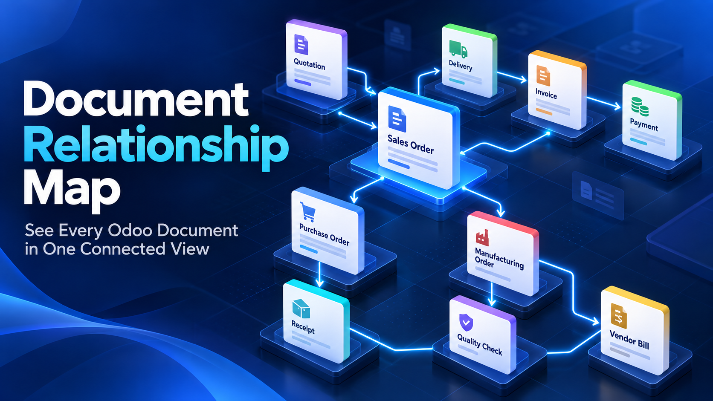
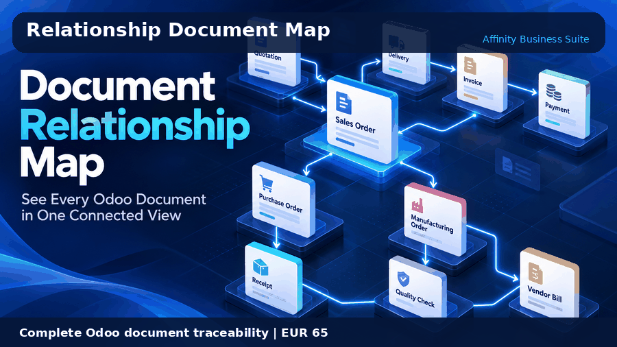
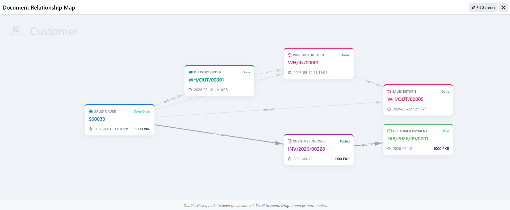
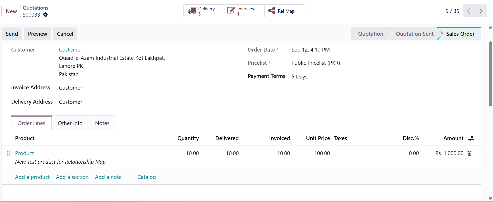

Odoo implementation, customization, integration, training and support for growing organizations.
Since 2019, Affinity Business Suite has delivered practical ERP solutions across Pakistan, the Middle East, North America and the United Kingdom. Our applications are designed around real operational needs, secure Odoo standards and dependable business workflows.


See the complete upstream and downstream history of a transaction from one interactive relationship graph.
Odoo 19 Community and EnterpriseConnect quotations, sales orders, deliveries, customer invoices, payments, sales returns and credit notes.
Connect purchase orders, receipts, vendor bills, payments, purchase returns and related stock activity.
Display related quality checks and manufacturing records when the corresponding Odoo applications are installed.
Zoom, pan, fit the map, move nodes and double-click a node to open the original Odoo record.
Give management, finance, sales, purchase and warehouse teams a shared visual audit trail.
The relationship graph follows the current user permissions, record rules and allowed companies.


Affinity Business Suite provides installation, configuration, customization and functional support.
Email: info@affinitysuite.net | Website: https://affinitysuite.net